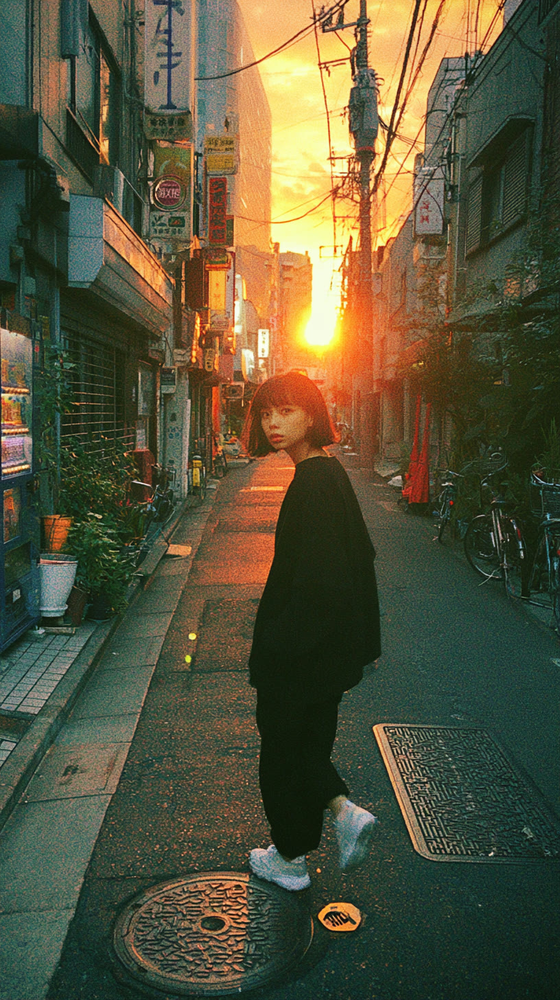

Toopdbq · Reverse Handoff
CircleFlow — サークル作成・選択フローの再設計
狙いは ①遷移・手数の簡素化 ②全体トーンの刷新。現状（Before）を単一の正として写し取り、ダーク＋カラフル放射グラデ＋ガラス＋写真フルブリードの世界観へ。既存の Wd* と colors_and_type.css のトークンのみを使用、新規発明なし。効果は 1 コンポーネント 1〜2 個。
Before · 現状実装
After · 再設計
01 · CircleSelect — select-grid / select-empty
サークルを選ぶ — グリッドと空状態
Before：黒地のベタ塗り、白枠 .53 と角丸混在のミニカード、位置情報なしは完全な黒画面で案内ゼロ。After：scrim 1 枚のミニカードへ刷新し、選択は全画面オーバーレイをやめて「カードをタップ→下部の軽い確定バー」に。空状態は現在地つきの親切な CTA。
Before
グリッド（現状）
select-grid
9:41
サークル
渋谷コミュニティ
渋谷駅周辺のコミュニティ。近くの人とつながろう。毎日たくさんの投稿。
＋128人
10.0m
新宿グループ
新宿エリアの交流グループ。グルメや夜景の写真を共有しよう。
＋86人
1.2km
原宿コミュニティ
原宿の最新スポット。ファッションとカフェの街から。
＋54人
2.0km

代官山サークル
代官山の落ち着いた路地裏から。散歩好きのためのサークル。
＋31人
2.4km
恵比寿ナイト
恵比寿の夜を楽しむ人たち。バーとレストランの情報。
＋47人
2.9km
表参道アート
表参道のギャラリーと建築。アート好きが集まる場所。
＋22人
3.1km
空状態（現状）
select-empty
9:41
サークル
白枠 .53 ＋ 角丸 8/16 混在、説明 8px×3 行で密度過多・可読性低下
位置情報なし＝本文が完全な黒画面。案内も CTA もなく行き止まり
カード tap で全画面オーバーレイ確認が挟まる（次セクション）
After
グリッド ＋ 軽い確定バー
select-grid
9:41
サークルを選択
渋谷ハチ公前
近い順
渋谷コミュニティ
渋谷駅周辺のコミュニティ
＋128
10.0m
新宿グループ
新宿エリアの交流グループ
＋86
1.2km
原宿コミュニティ
原宿の最新スポット
＋54
2.0km
代官山サークル
散歩好きのサークル
＋31
2.4km
恵比寿ナイト
夜を楽しむ人たち
＋47
2.9km
表参道アート
ギャラリーと建築
＋22
3.1km
渋谷コミュニティ
＋128人 · 10.0m
選択
空状態 ＋ CTA
select-empty
9:41
サークルを選択
近くにまだサークルが
ありません
あなたが渋谷で最初の
サークルを作りましょう。
渋谷ハチ公前
サークルを作る
別の場所を探す
scrim 1 枚のミニカード・角丸 12 統一・説明 1 行、選択カードはカラフルグラデのリングで明示
確定は下部の軽いガラスバー＝オーバーレイ廃止・1 タップで投稿へ戻る
空状態は現在地つきの案内＋「サークルを作る」CTA で行き止まりを解消
02 · CircleSelectConfirm — select-confirm
選択の確認 — 全画面オーバーレイを軽量化
Before：カード tap ごとに暗幕 64% の全画面オーバーレイが立ち上がり、確定すると overlay とグリッドの 2 画面を閉じて返す重い導線。After：グリッドを背後に残したまま短いガラスの確認シートがせり上がり、サマリを見て 1 タップで投稿へ。コンテキストが切れない。
Before
全画面オーバーレイ確認
select-confirm
9:41
渋谷コミュニティ
＋128人 · 10.0m
渋谷駅周辺のコミュニティ
このサークルを選択
カード tap ごとに暗幕 64% の全画面 dialog が起動
確定で overlay ＋ グリッドの 2 画面を閉じて返す（手数過多）
一覧のコンテキストが完全に隠れ、隣の候補と比べられない
After
確認シート（ピーク）
select-confirm
9:41
サークルを選択
渋谷コミュニティ
＋128
10.0m
新宿グループ
＋86
1.2km
原宿コミュニティ
＋54
2.0km
代官山サークル
＋31
2.4km
渋谷コミュニティ
＋128人が参加中 · 10.0m
渋谷駅周辺のコミュニティ。近くの人とつながろう。
＋128
人が参加中
選択して投稿へ
背後にグリッドを残した短いガラスシート（ピーク）＝コンテキスト保持
サマリ＋参加メンバーを見て「選択して投稿へ」の 1 タップで完了
下スワイプで取り消し＝別候補へすぐ戻れる（2 画面閉じ不要）
03 · CircleEdit — edit-camera / editing / maptap / range / save-ready
サークルをつくる — 段階化して地図を主役に
Before：1 画面に画像→基本情報→中心→範囲が混在し、footer 高さが 466 / 402 / 164px と乱高下して地図が隠れる。保存不可でも「作成」ボタンは出るが無反応。After：①写真＋名前 → ②場所＋範囲 の 2 ステップに分解。各シートは役割相応の一定高さで地図は常に主役（≥60% 可視）、現在ステップと次アクション・保存可否の理由を明示。
Before
footer 466px（写真未設定）
edit-camera
9:41
タップで画像を選択
サークル名を入力…
サークルの説明を入力…
footer 466px が画面の半分超を占有し、地図がほぼ見えない
状態で高さが 466 / 402 / 164px に乱高下し切替が唐突
Material 風プレースホルダ＋ベタ塗り #1A1A1A で世界観が素
After
ステップ① 写真・名前
edit-editing
9:41
1
写真・名前
2
場所・範囲
サークルをつくる
STEP 1 / 2 · 写真と名前
渋谷の朝活
サークル名 · 必須
朝の渋谷を散歩する人のサークル
次へ：場所を選ぶ
ステップ② 範囲・作成可
edit-range · save-ready
9:41
写真・名前
2
場所・範囲
範囲をきめる
1.7
km
100m
2000m
サークルを作成
ステップ② 未配置 · 保存不可の理由
edit-maptap
9:41
地図をタップして中心を決める
写真・名前
2
場所・範囲
範囲をきめる
—
km
サークルを作成
地図をタップして中心を決めてください
①写真＋名前 → ②場所＋範囲 の 2 ステップ。ヘッダーのインジケータで現在地と次アクションを明示
シートは役割相応の一定高さ（① 376 / ② 212px）で、地図は常に主役として可視
保存不可は「作成」を無効表示にし、理由（中心未設定）をその場で提示
ガラスシート＋写真スロット＋カラフル CTA で DS の世界観に刷新（効果は 1〜2 個）


 ＋128人が参加中
＋128人が参加中